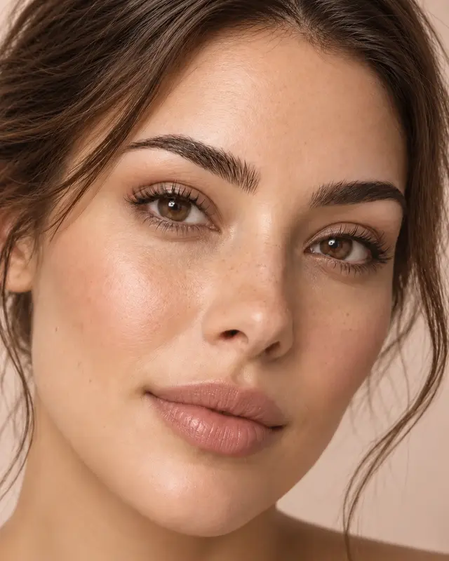
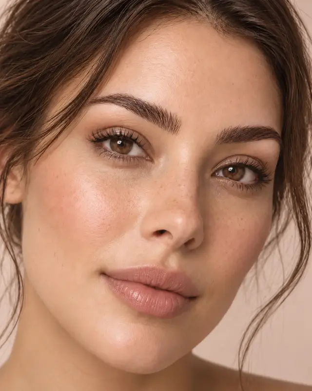

Design de sobrancelhas
Formato e opções de acabamento a definir.
ESPECIALIDADE 03
Equilíbrio e naturalidade para acompanhar os traços de cada rosto.

O CUIDADO
Esta é uma primeira proposta de serviços. Técnicas, formatos, durações e valores serão ajustados com Ellen.
Formato e opções de acabamento a definir.
Técnicas e disponibilidade a confirmar.
TÉCNICAS EM DESTAQUE
Referências visuais para conversar sobre forma, definição e intensidade. A técnica final será confirmada com Ellen.

Forma pensada para seus traços.

Mais definição com leveza.
Preenchimento temporário delicado.
Fios alinhados e mais presença.
IMAGENS EDITORIAIS ILUSTRATIVAS · NÃO REPRESENTAM TRABALHOS REALIZADOS PELO STUDIO